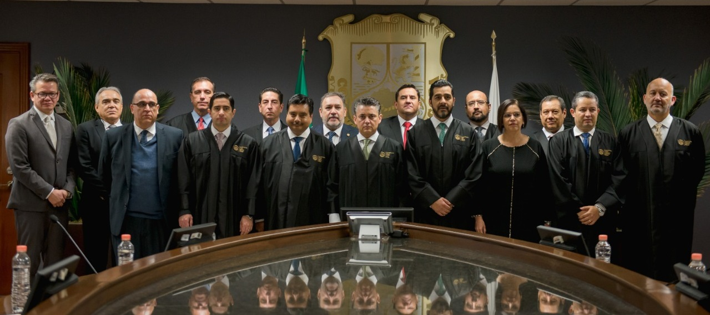

Bienvenidas y bienvenidos al sitio del Poder Judicial del Estado de Coahuila de Zaragoza.
En el Poder Judicial somos los responsables de impartir justicia en el estado, de dirimir diferencias entre particulares, de conciliar, y de promover con el ejemplo una cultura de la legalidad y justicia cotidiana.
Como uno de los tres poderes constitucionales que conforman el Estado de Coahuila asumimos el compromiso de garantizar el estado de derecho y aportar certidumbre a todos los coahuilenses propiciando la gobernabilidad.
En mi calidad de Presidente del Tribunal Superior de Justicia del Estado asumo las exigencias de imparcialidad e independencia y sobre todo rigor que la ciudadanía espera de nosotros como impartidores de justicia. Construir y mantener la confianza en el Poder Judicial es una tarea fundamental, para romper el círculo vicioso de cultura de la ilegalidad, falta de denuncia, y desconfianza.
El Poder Judicial está abierto a todas y todos los coahuilenses. Somos más de mil setecientos mujeres y hombres capacitados y dedicados de tiempo completo a cada aspecto de la impartición de justicia: magistrados, jueces, actuarios, evaluadores psicosociales, mediadores y personal administrativo que asumimos con vocación de servicio la carrera judicial.
La transparencia no es solo una obligación sino un valor que creemos necesario para impartir justicia de manera eficaz. Cada sentencia y cada proceso está abierto a consulta y a escrutinio en versiones públicas en pleno apego a la protección de datos personales. En este sitio encontrarán sesiones de pleno y de cada sala, así como datos abiertos, de los asuntos turnados al tribunal.
El Poder Judicial se abre a la participación ciudadana para conformar planes y proyectos que atiendan de mejor manera las necesidades de las y los coahuilenses, en cada Región del Estado estamos en contacto permanente con la sociedad civil, asociaciones de profesionistas, colegios y barras de abogados, universidades y ciudadanos.
Nuestro principal compromiso es transitar hacia juicios rápidos y sin papel, usando las tecnologías de información a nuestro alcance y priorizando la mediación y la construcción de acuerdo entre las partes en todos los asuntos que esto sea posible, y aplicando rigurosamente la ley con pleno apego a derechos humanos en los delitos que atentan contra nuestra sociedad.
Este Tribunal asume un liderazgo compartido para llevar al Poder Judicial del Estado de Coahuila a ser ejemplo nacional en impartición de justica acorde a las exigencias de nuestro tiempo.
Asumimos la honestidad y la imparcialidad como valores intrínsecos a nuestra función y por ello ponemos a su disposición el buzón de quejas para atender cualquier situación de manera confidencial, ágil y profesional.
Reciban un cordial saludo y con ello la certeza de que este Tribunal tiene la puerta abierta para juntos lograr un estado con Justicia y Legalidad.